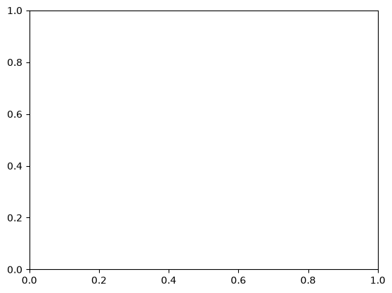
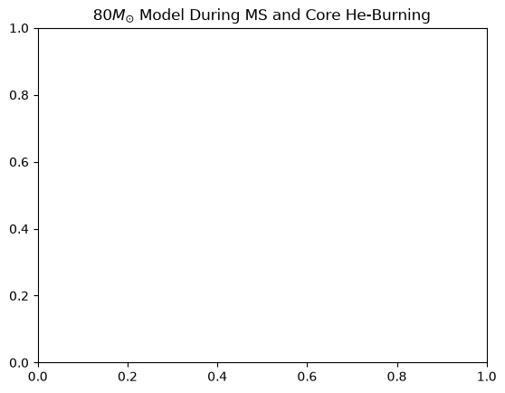

ICA15 - Pre-supernova Evolution of Massive Stars (Guest Lecture)#
Not due for credit, in-class participation only. Submit on D2L for half-credit on previously missed ICAs.
In-Class Assignment 15#
Pre-supernova Evolution of Massive Stars#
Learning Objectives#
Describe the major stages of post-core-helium-burning evolution in massive stars and how they lead to the final pre-supernova structure.
Differentiate between the physical mechanisms responsible for mass loss in massive stars and how these processes influence their evolutionary pathways.
Interpret evolutionary tracks on the H–R diagram to identify the major evolutionary phases of massive stars and explain how initial mass and mass loss affect their final pre-supernova configurations.
## Load relevant packages
import pandas as pd
import numpy as np
import matplotlib.pyplot as plt
from matplotlib.patches import Patch
1. Energy Loss via Neutrinos#
Goal: Interpret how nuclear burning and neutrino losses change during the evolution of a 20 M\(_{\odot}\) star. Download 20p0_msun_history.data before starting.
Source: The model was taken from this paper by Farag et al. (2020).
1.1 Set the evolutionary intervals#
Run the supplied cells. Replace '/path/to/your/data' to where you have downloaded the inlist.
The saved luminosities are base-10 logarithms in solar units, and star_age is in years. The cleanup cell below removes obsolete restart entries.
twenty_m_history = pd.read_csv('/path/to/your/data', sep=r'\s+',header=4)
model = twenty_m_history['model_number'].to_numpy()
keep = np.r_[model[:-1] < np.minimum.accumulate(model[:0:-1])[::-1], True]
twenty_m_history = twenty_m_history.loc[keep].reset_index(drop=True)
print(f"Loaded {len(twenty_m_history):,} accepted models")
---------------------------------------------------------------------------
FileNotFoundError Traceback (most recent call last)
Cell In[2], line 1
----> 1 twenty_m_history = pd.read_csv('/path/to/your/data', sep=r'\s+',header=4)
2 model = twenty_m_history['model_number'].to_numpy()
3 keep = np.r_[model[:-1] < np.minimum.accumulate(model[:0:-1])[::-1], True]
File /opt/anaconda3/lib/python3.11/site-packages/pandas/io/parsers/readers.py:948, in read_csv(filepath_or_buffer, sep, delimiter, header, names, index_col, usecols, dtype, engine, converters, true_values, false_values, skipinitialspace, skiprows, skipfooter, nrows, na_values, keep_default_na, na_filter, verbose, skip_blank_lines, parse_dates, infer_datetime_format, keep_date_col, date_parser, date_format, dayfirst, cache_dates, iterator, chunksize, compression, thousands, decimal, lineterminator, quotechar, quoting, doublequote, escapechar, comment, encoding, encoding_errors, dialect, on_bad_lines, delim_whitespace, low_memory, memory_map, float_precision, storage_options, dtype_backend)
935 kwds_defaults = _refine_defaults_read(
936 dialect,
937 delimiter,
(...)
944 dtype_backend=dtype_backend,
945 )
946 kwds.update(kwds_defaults)
--> 948 return _read(filepath_or_buffer, kwds)
File /opt/anaconda3/lib/python3.11/site-packages/pandas/io/parsers/readers.py:611, in _read(filepath_or_buffer, kwds)
608 _validate_names(kwds.get("names", None))
610 # Create the parser.
--> 611 parser = TextFileReader(filepath_or_buffer, **kwds)
613 if chunksize or iterator:
614 return parser
File /opt/anaconda3/lib/python3.11/site-packages/pandas/io/parsers/readers.py:1448, in TextFileReader.__init__(self, f, engine, **kwds)
1445 self.options["has_index_names"] = kwds["has_index_names"]
1447 self.handles: IOHandles | None = None
-> 1448 self._engine = self._make_engine(f, self.engine)
File /opt/anaconda3/lib/python3.11/site-packages/pandas/io/parsers/readers.py:1705, in TextFileReader._make_engine(self, f, engine)
1703 if "b" not in mode:
1704 mode += "b"
-> 1705 self.handles = get_handle(
1706 f,
1707 mode,
1708 encoding=self.options.get("encoding", None),
1709 compression=self.options.get("compression", None),
1710 memory_map=self.options.get("memory_map", False),
1711 is_text=is_text,
1712 errors=self.options.get("encoding_errors", "strict"),
1713 storage_options=self.options.get("storage_options", None),
1714 )
1715 assert self.handles is not None
1716 f = self.handles.handle
File /opt/anaconda3/lib/python3.11/site-packages/pandas/io/common.py:863, in get_handle(path_or_buf, mode, encoding, compression, memory_map, is_text, errors, storage_options)
858 elif isinstance(handle, str):
859 # Check whether the filename is to be opened in binary mode.
860 # Binary mode does not support 'encoding' and 'newline'.
861 if ioargs.encoding and "b" not in ioargs.mode:
862 # Encoding
--> 863 handle = open(
864 handle,
865 ioargs.mode,
866 encoding=ioargs.encoding,
867 errors=errors,
868 newline="",
869 )
870 else:
871 # Binary mode
872 handle = open(handle, ioargs.mode)
FileNotFoundError: [Errno 2] No such file or directory: '/path/to/your/data'
Run the next cell. Replace "XXX" with appropriate column names and "YYY" with appropriate numbers following:
An approximate start of zero-age main-sequence, defined as when H burning supplies more than 99% of surface luminosity and central H has begun decreasing.
H exhaustion, when the central H mass fraction first falls below \(10^{-4}\).
He exhaustion, when the central He mass fraction first falls below \(10^{-4}\) after H exhaustion.
These mark three broad intervals: H burning, He burning, and advanced burning. The He interval includes the transition to He ignition; advanced evolution includes contraction between burning episodes. The plotted luminosities include the whole star, including burning shells.
i = np.arange(len(twenty_m_history))
# load the central H abundance
XH = twenty_m_history["XXX"].to_numpy()
# load the central He abundance
XHe = twenty_m_history["XXX"].to_numpy()
# Identify where core H burning luminosity is 99% of the surface luminosity as the start of the MS
i_MS = np.flatnonzero((twenty_m_history["XXX"].to_numpy()
- twenty_m_history["XXX"].to_numpy() > np.log10(0.99))
& (XH < XH[0]))[0]
# Define TAMS when central H abundance falls below 0.1% (0.0001)
i_H = np.flatnonzero((i > i_MS) & (XH < "YYY"))[0]
# Define core He exhaustion when central He abundance falls below 0.1% (0.0001)
i_He = np.flatnonzero((i > i_H) & (XHe < "YYY"))[0]
print(f"H exhaustion: {twenty_m_history['star_age'].iloc[i_H]/1e6:,.3f} Myr")
print(f"He exhaustion: {twenty_m_history['star_age'].iloc[i_He]/1e6:,.3f} Myr")
---------------------------------------------------------------------------
NameError Traceback (most recent call last)
Cell In[3], line 1
----> 1 i = np.arange(len(twenty_m_history))
3 # load the central H abundance
4 XH = twenty_m_history["XXX"].to_numpy()
NameError: name 'twenty_m_history' is not defined
1.3 Make the luminosity plot#
The supplied code below calculates time remaining and shades the intervals. Add the two luminosity curves at the TODO:
Plot the nuclear-burning luminosity (
log_Lnuc) against time until core collapse.Plot the neutrino luminosity (
log_Lneu) against the same time values.Give both curves labels and enable the curve legend.
Keep the vertical axis linear because the luminosities should already be in logarithmic scales. The horizontal axis is logarithmic and reversed so evolution proceeds toward core collapse from left to right. The final saved model is used as the collapse reference; points with zero remaining time are excluded.
Note: log_Lnuc excludes energy consumed by photodisintegration and already deducts nuclear-reaction neutrino losses. log_Lneu includes neutrinos from both nuclear burning and thermal processes. Compare their trends, but do not subtract these curves as a complete energy budget or treat their ratio as a fraction of nuclear energy escaping.
twenty_m_history['time_left'] = (twenty_m_history['star_age'].iloc[-1]
- twenty_m_history['star_age'])
show = (i >= i_MS) & (twenty_m_history['time_left'].to_numpy() > 0)
plot_history = twenty_m_history.loc[show].copy()
time_left = plot_history['time_left'].to_numpy()
t_H = twenty_m_history['time_left'].iloc[i_H]
t_He = twenty_m_history['time_left'].iloc[i_He]
intervals = [(time_left[0], t_H, 'H burning', '#cfe8f3'),
(t_H, t_He, 'He burning', '#ffe0b2'),
(t_He, time_left[-1], 'Advanced burning', '#e1d5ef')]
fig, ax = plt.subplots(figsize=(11, 5.5))
for start, end, label, color in intervals:
ax.axvspan(end, start, color=color, alpha=0.55, linewidth=0)
for boundary in [t_H, t_He]:
ax.axvline(boundary, color='0.4', linestyle=':', linewidth=1)
# --------------EDIT BELOW THIS LINE------------------
# TODO: Add both luminosity curves, with labels.
ax.plot(plot_history['time_left'], "XXX", label='...')
ax.plot(plot_history['time_left'], "XXX", label='...')
# -------------------------------------------------
ax.set_xscale('log')
ax.set_xlim(time_left[0], time_left[-1])
ax.set_xlabel('Time until core collapse (yr)')
ax.set_ylabel(r'$\log_{10}(L/L_\odot)$')
# Uncomment after adding both curves:
# curve_legend = ax.legend(loc='lower right', fontsize=9)
# ax.add_artist(curve_legend)
phase_handles = [Patch(facecolor=color, alpha=0.55, label=label)
for start, end, label, color in intervals]
ax.legend(handles=phase_handles, loc='upper left', title='Evolutionary interval', fontsize=9)
ax.grid(alpha=0.2)
fig.tight_layout()
plt.show()
---------------------------------------------------------------------------
NameError Traceback (most recent call last)
Cell In[4], line 1
----> 1 twenty_m_history['time_left'] = (twenty_m_history['star_age'].iloc[-1]
2 - twenty_m_history['star_age'])
3 show = (i >= i_MS) & (twenty_m_history['time_left'].to_numpy() > 0)
4 plot_history = twenty_m_history.loc[show].copy()
NameError: name 'twenty_m_history' is not defined
1.4 Discussions#
With your larger group, try to answer the following:
How do nuclear burning and neutrino luminosities change during advanced evolution? Use an approximate value or change from your plot to support your answer.
Your group’s thoughtful response.
When nuclear burning must supply large neutrino losses, what happens to the rate of fuel consumption and the lifetime of the available fuel?
Your group’s thoughtful response.
During some intervals, neutrino luminosity exceeds the total nuclear-burning power (including shell burning). How can the star continue radiating light? What other source of energy can supply the losses? Remember that the two plotted diagnostics are not a complete energy budget.
Your group’s thoughtful response.
2. Measuring Mass Loss from a Red Supergiant#
Goal: Estimate a red supergiant mass-loss rate from observed circumstellar dust and wind kinematics.
De Beck et al. (2025) present radio observations of the Galactic RSG NML Cygni and find about \(2\times10^{-3}\,M_\odot\) of dust extending to about 2000 AU. The authors discuss a previously measured characteristic outflow speed of about \(\approx30\) km/s and find that the CO envelope supports mass-loss rates of several \(10^{-4}\,M_\odot\,\mathrm{yr}^{-1}\). The gas-to-dust ratio of 100 used below is an assumption, not a measurement from this paper.
Source: De Beck et al. (2025).
2.1 Observational inputs#
Run the cell below. The shell is treated as extending from the star to 2000 AU; this is a deliberately simplified characteristic flow region, not a measured uniform shell or a measured inner boundary.
# Published observational quantities (De Beck et al. 2025)
dust_mass_msun = 1e-3 # solar masses, approximate total dust mass
r_outer_au = 2000 # AU, approximate outer extent of detected dust
v_wind_kms = 30 # km/s, characteristic previously reported wind speed
# Assumed conversion (not directly measured)
gas_to_dust = 100
# Constants
MSUN_G = 1.98847e33
AU_CM = 1.495978707e13
YEAR_S = 365.25 * 24 * 3600
print(f"Dust mass: {dust_mass_msun:.1e} Msun")
print(f"Dust extent: {r_outer_au:.0f} AU")
print(f"Characteristic wind speed: {v_wind_kms:.0f} km/s")
Dust mass: 1.0e-03 Msun
Dust extent: 2000 AU
Characteristic wind speed: 30 km/s
2.2 Estimate the circumstellar gas density#
To measure a mass-loss rate, we need to assume a gas-to-dust mass ratio to get the total gas mass. Typical values for RSGs range from 100 to 500. In the above cell we assumed a gas-to-dust mass ratio of 100. Treat the emitting region as a sphere of radius 2000 AU and calculate its mean gas density in \(\mathrm{g\,cm^{-3}}\):
Hint: Convert solar masses to grams and AU to centimeters.
# TODO: calculate gas mass and mean density
gas_mass_msun = ...
r_cm = ...
gas_mass_g = ...
mean_density = ...
print(f"Gas mass = {gas_mass_msun:.3g} Msun")
print(f"Mean density = {mean_density:.3e} g/cm^3")
---------------------------------------------------------------------------
TypeError Traceback (most recent call last)
Cell In[6], line 7
4 gas_mass_g = ...
5 mean_density = ...
----> 7 print(f"Gas mass = {gas_mass_msun:.3g} Msun")
8 print(f"Mean density = {mean_density:.3e} g/cm^3")
TypeError: unsupported format string passed to ellipsis.__format__
2.3 Calculate the mass-loss rate#
Calculate the wind travel time to 2000 AU and estimate the average mass-loss rate.
This is also the result of integrating \(\rho(r)=\dot M/(4\pi r^2v_w)\) over a steady, spherical wind from \(r=0\) to \(R\). Do not substitute the volume-averaged density directly into \(4\pi R^2\rho v_w\): that formula requires the local density at \(R\).
# TODO: calculate travel time and mass-loss rate
v_cm_s = ...
wind_time_yr = ...
mdot_msun_yr = ...
print(f"Flow time = {wind_time_yr:.1f} yr")
print(f"Estimated mass-loss rate = {mdot_msun_yr:.2e} Msun/yr")
---------------------------------------------------------------------------
TypeError Traceback (most recent call last)
Cell In[7], line 6
3 wind_time_yr = ...
4 mdot_msun_yr = ...
----> 6 print(f"Flow time = {wind_time_yr:.1f} yr")
7 print(f"Estimated mass-loss rate = {mdot_msun_yr:.2e} Msun/yr")
TypeError: unsupported format string passed to ellipsis.__format__
2.4 Discussions#
With your larger group, try to answer the following:
De Beck et al. (2025) find that their CO observations support mass-loss rates on the order of \(\sim10^{-4}\,M_\odot\,\mathrm{yr}^{-1}\). Is your estimate comparable?
Your group’s thoughtful response.
The paper reveals asymmetric arcs, clumps, and higher-velocity material. Why might your estimate differ from the star’s current mass-loss rate?
Your group’s thoughtful response.
How would your answer change if the assumed gas-to-dust ratio were 200 instead of 100? Answer qualitatively, you don’t have to recalculate the mass-loss rate.
Your group’s thoughtful response.
Caveat: The observed dust mass, dust extent, and characteristic wind speed do not necessarily describe the same parcel of gas or a complete steady-state outflow. This is an order-of-magnitude teaching estimate, not a reproduction of the paper’s radiative-transfer analysis.
3. Mass-loss evolution of WR stars#
Goal: Interpret how mass loss changes the H–R diagram evolution and surface composition of an \(80,M_\odot\) stellar model. Download 80m_zams_to_cc before starting.
Source: MESA’s 80m_zams_to_cc test-suite model, evolved here only through core He depletion (not core collapse).
3.1 Plot the H–R diagram and mass-loss rate#
Run the loading cell below. Replace '/path/to/your/data' with the location of your downloaded file. Inspect the available column names.
# load data and see which variables are available
wr_80m_history = pd.read_csv('/path/to/your/data',sep=r'\s+',header=4)
list(wr_80m_history)
wr_80m_history.head(10)
---------------------------------------------------------------------------
FileNotFoundError Traceback (most recent call last)
Cell In[8], line 2
1 # load data and see which variables are available
----> 2 wr_80m_history = pd.read_csv('/path/to/your/data',sep=r'\s+',header=4)
3 list(wr_80m_history)
4 wr_80m_history.head(10)
File /opt/anaconda3/lib/python3.11/site-packages/pandas/io/parsers/readers.py:948, in read_csv(filepath_or_buffer, sep, delimiter, header, names, index_col, usecols, dtype, engine, converters, true_values, false_values, skipinitialspace, skiprows, skipfooter, nrows, na_values, keep_default_na, na_filter, verbose, skip_blank_lines, parse_dates, infer_datetime_format, keep_date_col, date_parser, date_format, dayfirst, cache_dates, iterator, chunksize, compression, thousands, decimal, lineterminator, quotechar, quoting, doublequote, escapechar, comment, encoding, encoding_errors, dialect, on_bad_lines, delim_whitespace, low_memory, memory_map, float_precision, storage_options, dtype_backend)
935 kwds_defaults = _refine_defaults_read(
936 dialect,
937 delimiter,
(...)
944 dtype_backend=dtype_backend,
945 )
946 kwds.update(kwds_defaults)
--> 948 return _read(filepath_or_buffer, kwds)
File /opt/anaconda3/lib/python3.11/site-packages/pandas/io/parsers/readers.py:611, in _read(filepath_or_buffer, kwds)
608 _validate_names(kwds.get("names", None))
610 # Create the parser.
--> 611 parser = TextFileReader(filepath_or_buffer, **kwds)
613 if chunksize or iterator:
614 return parser
File /opt/anaconda3/lib/python3.11/site-packages/pandas/io/parsers/readers.py:1448, in TextFileReader.__init__(self, f, engine, **kwds)
1445 self.options["has_index_names"] = kwds["has_index_names"]
1447 self.handles: IOHandles | None = None
-> 1448 self._engine = self._make_engine(f, self.engine)
File /opt/anaconda3/lib/python3.11/site-packages/pandas/io/parsers/readers.py:1705, in TextFileReader._make_engine(self, f, engine)
1703 if "b" not in mode:
1704 mode += "b"
-> 1705 self.handles = get_handle(
1706 f,
1707 mode,
1708 encoding=self.options.get("encoding", None),
1709 compression=self.options.get("compression", None),
1710 memory_map=self.options.get("memory_map", False),
1711 is_text=is_text,
1712 errors=self.options.get("encoding_errors", "strict"),
1713 storage_options=self.options.get("storage_options", None),
1714 )
1715 assert self.handles is not None
1716 f = self.handles.handle
File /opt/anaconda3/lib/python3.11/site-packages/pandas/io/common.py:863, in get_handle(path_or_buf, mode, encoding, compression, memory_map, is_text, errors, storage_options)
858 elif isinstance(handle, str):
859 # Check whether the filename is to be opened in binary mode.
860 # Binary mode does not support 'encoding' and 'newline'.
861 if ioargs.encoding and "b" not in ioargs.mode:
862 # Encoding
--> 863 handle = open(
864 handle,
865 ioargs.mode,
866 encoding=ioargs.encoding,
867 errors=errors,
868 newline="",
869 )
870 else:
871 # Binary mode
872 handle = open(handle, ioargs.mode)
FileNotFoundError: [Errno 2] No such file or directory: '/path/to/your/data'
Replace "XXX" with the appropriate MESA column names. The three quantities are already logarithmic; do not take another logarithm.
# load Teff
wr_80m_log_Teff = wr_80m_history['##']
# load L
wr_80m_log_L = wr_80m_history['##']
# load mass-loss rate
wr_80m_log_abs_Mdot = wr_80m_history['##']
---------------------------------------------------------------------------
NameError Traceback (most recent call last)
Cell In[9], line 2
1 # load Teff
----> 2 wr_80m_log_Teff = wr_80m_history['##']
4 # load L
5 wr_80m_log_L = wr_80m_history['##']
NameError: name 'wr_80m_history' is not defined
Make an H–R diagram using a scatter plot, coloring each point by log_abs_mdot. Replace X with a chosen \(\log T_{\rm eff}\) boundary for the hot, WR-like region, and Y with a suitable vertical position for its label.
fig, ax = plt.subplots()
sc = ax.scatter(wr_80m_log_Teff,
wr_80m_log_L,
c=wr_80m_log_abs_Mdot,
cmap='inferno')
ax.invert_xaxis()
plt.colorbar(sc,label=r'$\left | \dot{M} \right | \ (M_{\odot} \ \rm{yr}^{-1})$')
# label the WR phase
plt.axvline(X,color='k',ls='-',lw=1)
ax.text(X,Y, 'WR', rotation=90)
plt.legend()
plt.xlabel(r'$\rm{log}~T_{\rm{eff}} \ (K)$')
plt.ylabel(r'$\rm{log}~L \ (L_{\odot})$')
plt.show()
---------------------------------------------------------------------------
NameError Traceback (most recent call last)
Cell In[10], line 3
1 fig, ax = plt.subplots()
----> 3 sc = ax.scatter(wr_80m_log_Teff,
4 wr_80m_log_L,
5 c=wr_80m_log_abs_Mdot,
6 cmap='inferno')
8 ax.invert_xaxis()
10 plt.colorbar(sc,label=r'$\left | \dot{M} \right | \ (M_{\odot} \ \rm{yr}^{-1})$')
NameError: name 'wr_80m_log_Teff' is not defined

3.2 Discussions Part 1#
Does this star become a blue supergiant? If so, when?
Your groups response here.
Does this star experience an LBV outburst? If so, how can we tell?
Your groups response here.
Does the star become a red supergiant? If so, why or why not?
Your groups response here.
Describe in a few words qualitatively, the path of the model after it leaves the MS.
Your groups response here.
3.3 WR subclasses#
WR stars can be further divided into subclasses depending on surface abundances:
WNL stars: some H present on their surface (\(X_{\rm{H}}\lt0.4\)) and increased He and N abundances consistent with CNO cycle burning.
WNE stars: similar to WNL but they lack hydrogen (\(X_{\rm{H}}=0\))
WC stars: no H, little or no N, some He/C/O suggest partial H burning
WO stars: similar to WC stars but strongly increased O suggesting nearly complete helium burning
Run the next cell. Load each variable with the appropriate MESA column names for model number, surface abundances, and the envelope fraction left.
# load additional vars
wr_80m_model_number = wr_80m_history['##']
wr_80m_surface_he4 = wr_80m_history['surface_##']
wr_80m_surface_c12 = wr_80m_history['surface_##']
wr_80m_surface_n14 = wr_80m_history['surface_##']
wr_80m_surface_o16 = wr_80m_history['surface_##']
wr_80m_envelope_fraction_left = wr_80m_history['##']
---------------------------------------------------------------------------
NameError Traceback (most recent call last)
Cell In[11], line 2
1 # load additional vars
----> 2 wr_80m_model_number = wr_80m_history['##']
3 wr_80m_surface_he4 = wr_80m_history['surface_##']
4 wr_80m_surface_c12 = wr_80m_history['surface_##']
NameError: name 'wr_80m_history' is not defined
Plot the envelope fraction left and the surface abundances of He, C, and O against model number. Replace each X and Y with the appropriate variables and enable the legend.
plt.title('80$M_{\odot}$ Model During MS and Core He-Burning')
# --------------EDIT BELOW THIS LINE--------------------------
plt.plot(X, Y,label=r'$X_{\rm{env}}(H)$')
plt.plot(X, Y,label=r'$X_{\rm{surface}}(^{4}\rm{He})$')
plt.plot(X, Y,label=r'$X_{\rm{surface}}(^{12}\rm{C})$')
plt.plot(X, Y,label=r'$X_{\rm{surface}}(^{16}\rm{O})$')
# ------------------------------------------------------------
plt.legend()
plt.xlabel(r'$\rm{Model \ Number}$')
plt.ylabel(r'Variable')
---------------------------------------------------------------------------
NameError Traceback (most recent call last)
Cell In[12], line 4
1 plt.title('80$M_{\odot}$ Model During MS and Core He-Burning')
3 # --------------EDIT BELOW THIS LINE--------------------------
----> 4 plt.plot(X, Y,label=r'$X_{\rm{env}}(H)$')
6 plt.plot(X, Y,label=r'$X_{\rm{surface}}(^{4}\rm{He})$')
8 plt.plot(X, Y,label=r'$X_{\rm{surface}}(^{12}\rm{C})$')
NameError: name 'X' is not defined

3.4 Discussions Part 2#
What subclass of WR stars does the model become at the last model number (this corresponds to core He-depletion) and why?
Respond here.
After the star has left the main-sequence but before core He-depletion what other subclass of WR stars does the star appear as before its final?
Hint: look around model number of 800 to answer this.
Respond here.
What will be the evolutionary fate of this star? Will it blow up? What type of supernova will it be?
Respond here.